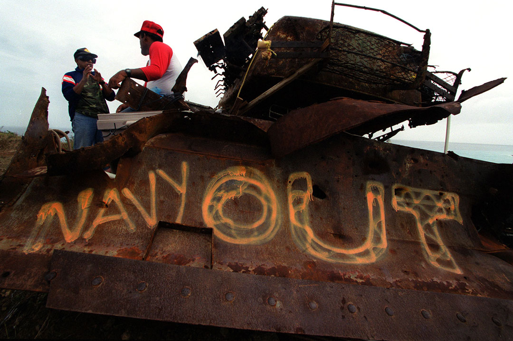
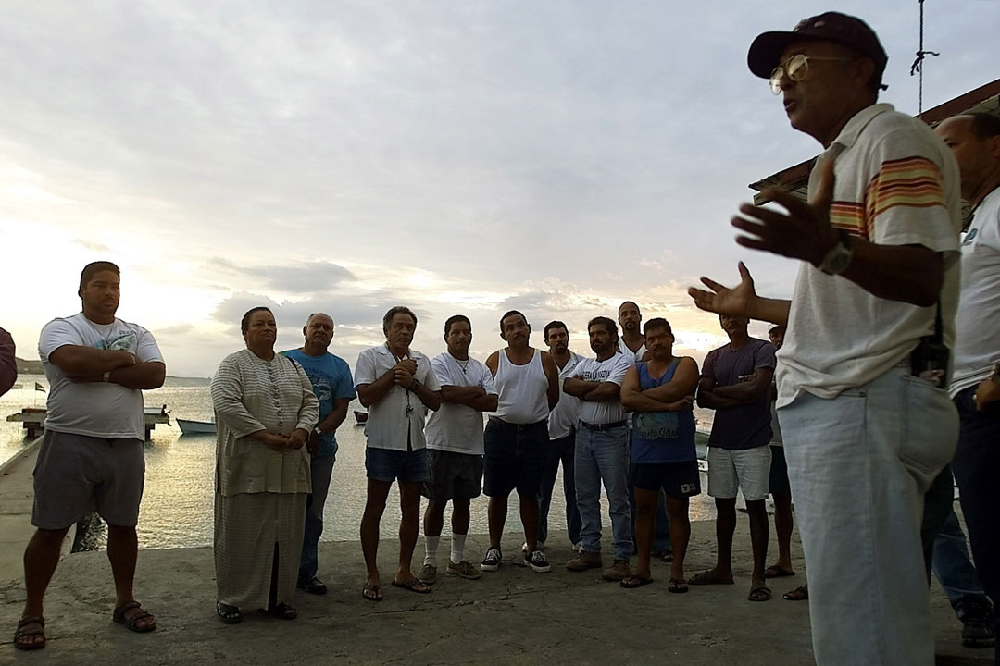
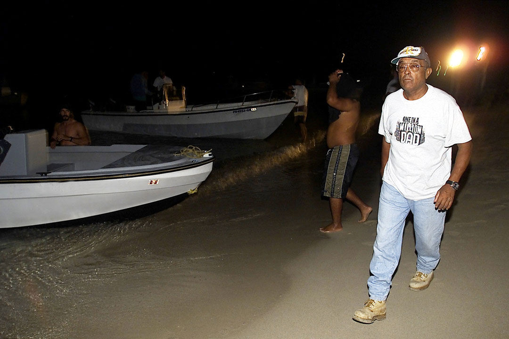
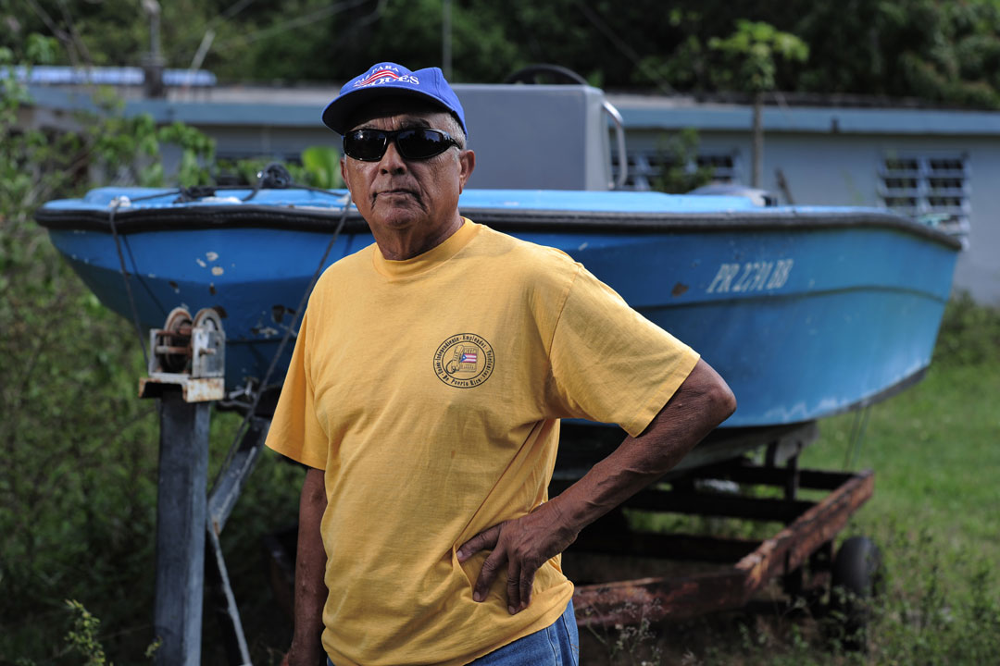
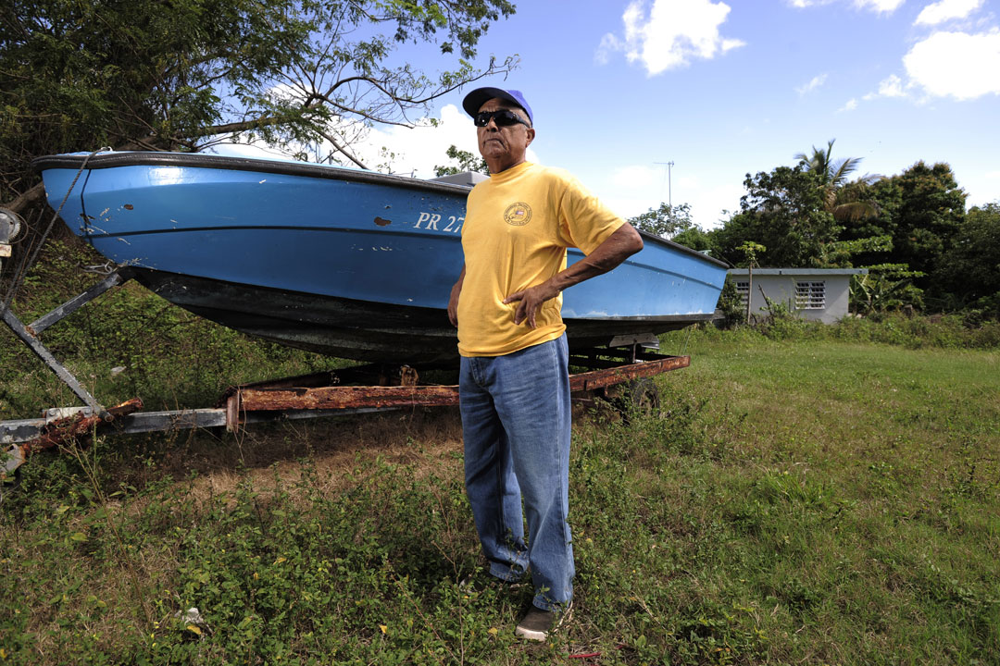

Carlos Zenón junto a otros desobedientes en Monte David, el 8 de diciembre de 1999. (Archivo/ Xavier J. Araújo)
Carlos Zenón conversa con varios pescadores durante de una reunión convocada por los pescadores del norte y el sur de Vieques donde se llegó a un acuerdo que entrarían a la zona restringida maritima a pescar, sin importa las limitaciones establecidas por la guardia costanera. (Archivo/ José Jiménez)
Carlos Zenon se prepara para entrar por mar a la zona restringida en horas de la noche, transportando manifestantes para bloquear los bombardeos de la Marina en Vieques el 27 de junio de 2000. (Archivo/Jose Jiménez)
Presidente de la Asociación de Pescadores, Carlos Zenón ya había sido arrestado 20 años antes de las protestas definitivas en contra de la Marina en Vieques por entrar a pescar en la zona restringida e interrumpir los ejecicios militares. (Carlos Giusti/ carlos.giusti@gfrmedia.com)
Los hijos de Carlos Zenón, Cacimar y Pedro, también fueron parte de las manifestaciones en contra de la Marina. (Carlos Giusti/ carlos.giusti@gfrmedia.com)